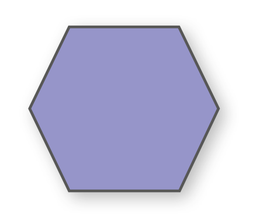

188
UNIDADE 6 - CAPÍTULO 2
CAPÍTULO 2 - Operações com medidas de ângulos
Adição e subtração de medidas de ângulos
No clube que Maria frequenta, para entrar na área das piscinas ou sair dela, os sócios precisam passar por uma catraca. Quando Maria passou por ela, esta fez um giro de 120°. Em seguida, passou outro sócio.
As catracas representadas nas imagens, quando giram, fazem rotações em torno de um ponto e realizam o giro com um determinado ângulo.


1. Troque ideias com um colega e respondam:
a) De quantos graus foi o giro total dado pela catraca após o segundo sócio passar?
b) Quantos graus faltaram para ela dar uma volta completa?
Para responder às questões propostas, foram efetuadas duas operações: uma adição e uma subtração entre as medidas dos ângulos. Vejamos algumas situações envolvendo essas operações.
Situação 1
med (AÔC) = med (AÔB) + med (BÔC)
med (AÔC) = 30° 37’ + 20° 25’
189
UNIDADE 6 - CAPÍTULO 2
Como 60’ correspondem a 1°, devemos transformar 62’ em graus e minutos:
62’ = 1° 2’
med (AÔC) = 50° + 1° 2’
med (AÔC) = 51° 2’
Portanto, o ângulo AÔC mede 51° 2’.
Situação 2
O ângulo NÔQ, a seguir, mede 60°. Qual é a medida do ângulo NÔP?
med (NÔP) = med (NÔQ) − med (PÔQ)
med (NÔP) = 60° − 27° 30’
Para subtrair os minutos, podemos transformar 1° em minutos, pois 60° = 59° 60’. Assim:

Portanto, a medida do ângulo NÔP é 32° 30’.
Quando adicionamos ou subtraímos as medidas de dois ângulos, devemos adicionar ou subtrair graus com graus, minutos com minutos e segundos com segundos.
Situação 2
Vamos calcular 42° 35’ 58” + 37° 28’ 41”.
Como a quantidade de minutos e segundos excedeu 60, devemos realizar as transformações de unidades. Observe:
99” = 1’ 39”
63’ = 1° 3’
Portanto, 42° 35’ 58” + 37° 28’ 41” = 79° + 1° 3’ + 1’ 39” = 80° 4’ 39”.
190
UNIDADE 6 - CAPÍTULO 2
ENCONTRE SOLUÇÕES
1. Mirela está ensaiando para a sua apresentação de balé. Ela deverá dar duas voltas completas usando a sapatilha de ponta. De quantos graus será o giro total?
2. Em seu caderno, calcule as somas.
a) 53° + 75°
b) 13° 22’ + 46° 18’
c) 14° + 19° 56’
d) 35° 48’ + 21° 12’
e) 46° 34’ 12” + 11° 25’ 48”
f) 9° 56’ 13” + 10° 29’ 44”
3. Agora, calcule as diferenças.
a) 65° − 47°
b) 82° − 31° 27’
c) 43° 12’ − 15° 18’
d) 57° − 42° 16’ 10”
e) 19° 24’ 8” − 7° 35’ 12”
f) 25° 46’ − 12° 27’ 55”
Multiplicação da medida de um ângulo por um número natural
Carlos é arquiteto e projetou um ângulo de 60° entre duas paredes de uma sala de visitas. Enquanto fazia o desenho da planta, ele resolveu ampliar a sala dobrando a medida desse ângulo. De quantos graus será o novo ângulo formado pelas paredes?
Para calcular o dobro da medida do ângulo, basta multiplicarmos 60° por 2.
2 ∙ 60° = 120°
O novo ângulo formado pelas paredes será de 120°.
Observe outra situação envolvendo a multiplicação da medida de um ângulo por um número natural:
191
UNIDADE 6 - CAPÍTULO 2
4 ∙ (32° 15’ 9”) = 128° 60’ 36”
Como 60’ correspondem a 1°, vamos transformar os minutos em graus:
128° 60’ 36” → 129° 36”
O quádruplo da medida de um ângulo de 32° 15’ 9” é 129° 36”.
ENCONTRE SOLUÇÕES
1. Em seu caderno, calcule os produtos.
a) (7° 16’) ∙ 5
b) (18° 22’ 10”) ∙ 3
c) (26° 13’ 45”) ∙ 6
d) (54° 19’) ∙ 2
e) (30° 25’ 14”) ∙ 4
f) (41° 36’ 20”) ∙ 7
2. Agora, calcule:
a) o dobro da medida de um ângulo de 29° 15’ 12”;
b) o triplo da medida de um ângulo de 14° 31’ 7”;
c) o quádruplo da medida de um ângulo de 5° 11’ 6”.
3. Sabendo que u = 34° 12’, t = 62° e v = 11° 53’ 37”, determine:
a) 2 ∙ u + v
b) 3 ∙ t - v
c) u + v + 2 ∙ t
d) 3 ∙ t - 2 ∙ u
4. Cada ângulo interno de um hexágono regular mede 120°. Determine a soma das medidas dos ângulos internos de um hexágono.
Divisão da medida de um ângulo por um número natural
Observe duas situações nas quais realizamos a divisão da medida de um ângulo por um número natural.
Situação 1
Um ângulo cuja medida é 123° 57’ 36” foi dividido em 3 ângulos congruentes, ou seja, que possuem a mesma medida. Qual é a medida de cada ângulo formado?
Logo, 123° 57’ 36” dividido por 3 é igual a 41° 19’ 12”.
192
UNIDADE 6 - CAPÍTULO 2
Situação 2
Qual é a metade da medida de um ângulo de 84° 35’ 24”?
Vamos dividir 84° 35’ 24” por 2.

ENCONTRE SOLUÇÕES
1. Em seu caderno, calcule:
a) a terça parte da medida de um ângulo de 37° 42’;
b) a quinta parte da medida de um ângulo de 85° 50’;
c) a quarta parte da medida de um ângulo de 22° 20’.
2. Agora, calcule os quocientes.
a) (83° 32’ 46”) : 2
b) (135° 42’) : 5
c) 122° : 4
3. Calcule no caderno:
a) \(\dfrac{2}{3}\) de 36°;
b) \(\dfrac{3}{5}\) de 134°;
c) \(\dfrac{5}{7}\) de 49°;
4. Júlia dividiu o ângulo de 42° 31’ 3” por um número natural e obteve 14° 10’ 21”. Qual é esse número?
5. Copie as igualdades a seguir, em seu caderno, e identifique quais são verdadeiras, corrigindo as falsas.
a) (157° 32’ 54”) : 3 = 52° 30’ 52”
b) (67° 22’) ∙ 2 + 18° 9’ = 152° 53’
c) 191° 40” − 98° 40’ = 93°
6. Copie o quadro em seu caderno e complete-o com os valores que estão faltando.